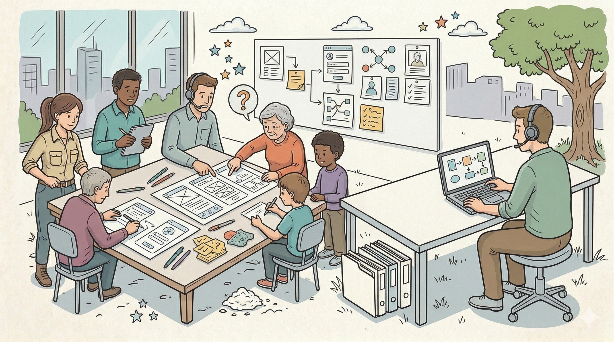
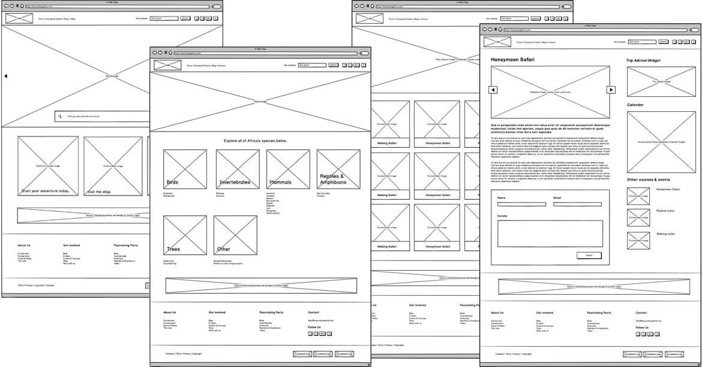
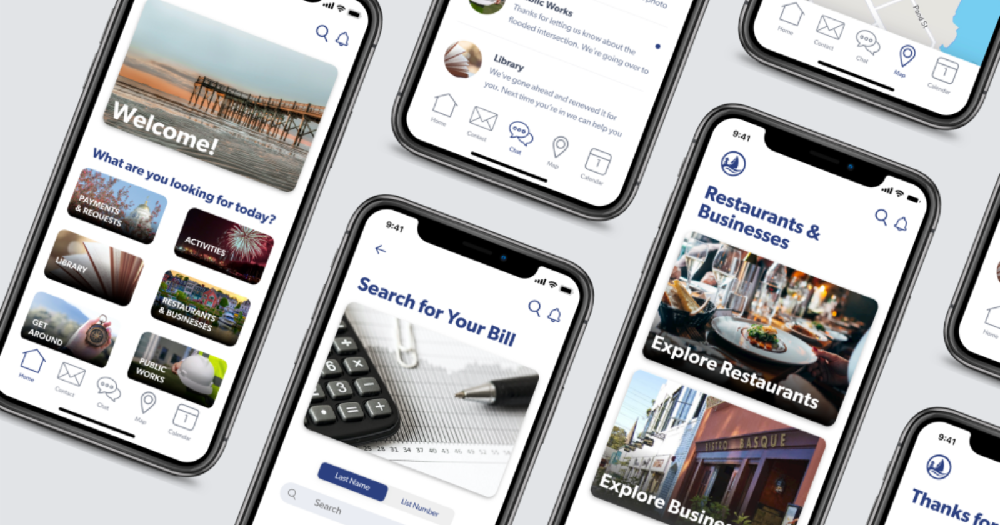

2.6: Técnica de Elicitação — Prototipagem
Introdução: O Protótipo como Ponte Cognitiva
Muitas vezes, os usuários não conseguem visualizar como um requisito se traduzirá em uma interface funcional. A prototipagem é a criação de um modelo simplificado do sistema, focado em validar fluxos, layout e regras de negócio. Ela serve para "falhar cedo e barato", evitando que erros de usabilidade ou de lógica cheguem à fase de implementação (codificação).

1. Classificação por Fidelidade
A fidelidade refere-se ao nível de detalhamento e realismo do protótipo em relação ao produto final.
A. Baixa Fidelidade (Paper Prototyping)
Esboços feitos à mão em papel ou quadros brancos.

Foco: Estrutura, hierarquia de informações e navegação básica.
Vantagem: Custo quase zero e incentiva o feedback honesto (o usuário não tem medo de criticar um desenho a lápis).
Uso: Fase inicial de brainstorming e definição de fluxos.
B. Média Fidelidade (Wireframes)
Representações digitais em preto e branco, sem cores ou imagens finais.
Foco: Organização espacial dos elementos na tela e fluxos de cliques.
Vantagem: Mais profissional que o papel, mas ainda focado na funcionalidade e não na estética.
Uso: Validação de arquitetura de informação.
C. Alta Fidelidade (Maquetes Interativas)
Protótipos que se parecem e se comportam quase como o sistema real (usando ferramentas como Figma ou Adobe XD).

Foco: UX (Experiência do Usuário), UI (Interface), transições e validação visual final.
Vantagem: Permite testes de usabilidade reais e serve como guia exato para o desenvolvedor.
Uso: Aprovação final de requisitos antes da codificação.
2. Estratégias de Ciclo de Vida do Protótipo
O analista deve definir o destino do protótipo no início do projeto:
- Protótipo Descartável (Throwaway): O protótipo é criado apenas para validar requisitos e, uma vez aprovado, é jogado fora. O desenvolvedor escreve o código do zero.Objetivo: Rapidez e descoberta.
- Protótipo Evolutivo: O protótipo é construído com tecnologias que permitem que ele seja refinado e transformado no sistema final.Objetivo: Aproveitamento de código, comum em metodologias ágeis.Risco: Pode gerar um código inicial "sujo" devido à pressa das iterações.
3. O Ciclo da Prototipagem
O processo é iterativo e segue quatro passos fundamentais:
- Levantar Requisitos Iniciais: O que este protótipo precisa provar?
- Desenvolver: Criar a versão (papel ou digital).
- Avaliar: O stakeholder interage com o protótipo e aponta erros e melhorias.
- Refinar: Ajustar o protótipo (ou o documento de requisitos) com base no feedback.
4. Vantagens e Riscos Técnicos
| Vantagem | Risco / Desvantagem |
|---|---|
| Redução de Ambiguidade: O "entendi" vira "vi". | Expectativa Irreal: O cliente vê um protótipo de alta fidelidade e acha que o sistema está pronto (não entende a complexidade do backend). |
| Engajamento do Usuário: O interessado sente que está participando da criação. | Custo de Mudança: Alterar um protótipo complexo de alta fidelidade pode levar tanto tempo quanto alterar o código. |
| Validação de Fluxos: Identifica cliques desnecessários ou processos confusos precocemente. | Foco na Estética: O cliente pode perder tempo discutindo a cor do botão em vez de validar a regra de negócio. |
5. O Papel do Analista na Prototipagem
O analista de sistemas não precisa ser um designer profissional, mas deve dominar a capacidade de traduzir a Regra de Negócio em Interface.
O protótipo deve ser usado para responder perguntas específicas:
"Este fluxo de fechamento de caixa faz sentido para o operador?"
" O sistema exibe todos os dados necessários para a tomada de decisão?".
📝 Resumo
- Conceito: Simulação do sistema para validação de requisitos.
- Níveis: Papel (Baixa), Digital (Média), Interativo (Alta).
- Diferencial: É a melhor técnica para evitar que o desenvolvedor codifique algo que o usuário não consegue usar.
📚 Este material foi criado por Kristian Erdmann e compõe a base técnica da Unidade Curricular de Análise e Modelagem de Sistemas.